01 - Basic Web
During the whole “Basic Web” theme I learned about design principles, typography, and creating of logos, that helped me a lot when I was designing my projects in current semester. I learned as well about “color theory”, and that was very necessary! I always had a problem with choosing right colors. Now I know more and it’s going in a good way for me to get better color taste and understanding how it really works.
By preparing graphic content, I improved my skills in Adobe Photoshop CC 2018, and I learned how to work with Adobe Illustrator CC 2018 and Adobe InDesign CC 2018. Now I can easily work with any graphic and make materials for my own use.
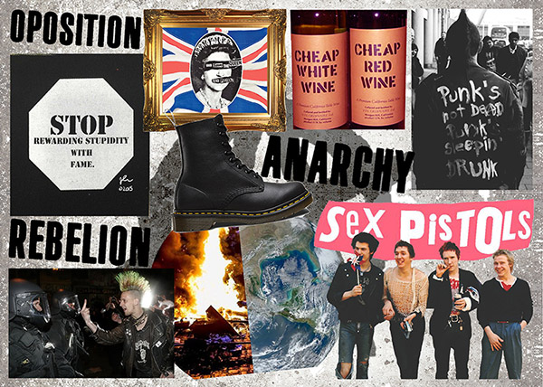 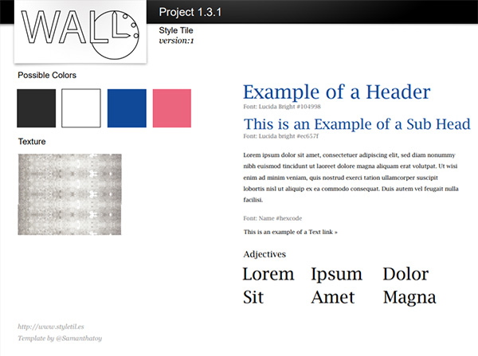 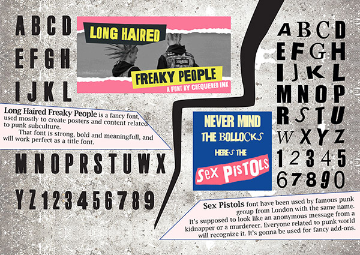
01.04.01 Responsive website
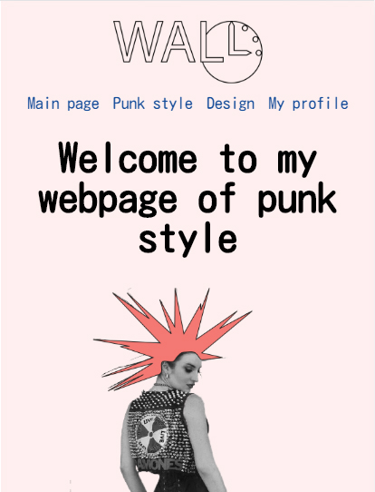That was my first web project in during this semester. I thought it will be difficult, but I learned to prepare all the elements before coding. Nobody ever taught me that way of creating projects. I did my sketch, prepared colors, typography, moodboard, considered images assets and folder structure. I implemented gestalt laws like a similarity and proximity of objects, so constrution and placing of elements is proper. After all of that, I didn’t get distracted and I could focus on coding.
I used "Brackets" text editor to handle with code. "Live previev" option made my work more effective and faster.
I improved my skills in HTML and CSS from beginner level. I started to write correct code and I was able to understand it better. CSS grid was the biggest breakpoint for my learning path. I learned how to work with columns, rows and elements to set up them correctly. After that, I used grid every time.
02 - Basic Content
With “Basic Content” theme I continued web developing. I learned new tricks in CSS and more selectors that allowed me to do more advanced operations. I also started with video production and Adobe Premiere Pro CC 2018. I had my first tries with Premiere Pro in past, but now I can say that I am video producer (junior).
I love to make videos, that’s the area where I want to focus the most. I know how to choose a proper devices and set them to get the best result with recording a video and audio. I know how to treat a light and how to work with colors.
I can edit, cut, make effects or transitions, and export with finest quality. I’m still improving my skills creating productions for my own purpose, and by practise I will develop soon.
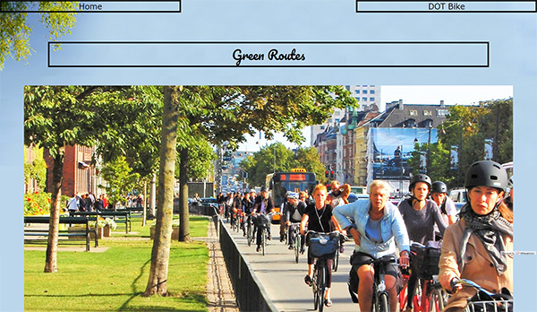 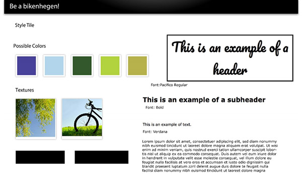 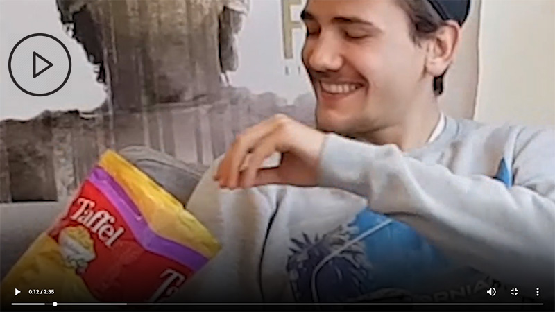
02.01.03 Video: Story without words
Here I would like to present a first real movie, that I had a pleasure to create with my friends in a group project. We had a task to make a “story without words”. There were 4 of us working with that project: Klajdi Ajdini, Peter Jensen, Andrei Marius and me. I took a part as an actor and co-producer. We had a great fun doing the shots, and we learned a lot about video producing. First of all, we had to prepare ourselves for that project. We've come up with a plan, made a storyboard, and set devices. We used mobile phone to record video. After shots, we assembled video material with music. That's how video came.
Video: Sweet healthy life
Another movie, this time it was more difficult job, because we had to make a video with longer plot, and various shots. I had a little bit more experience gained with previous project, so I could add my piece of knowledge to produce that video.
That was a part of whole project with a group "Sense8". We prepared scenario, storyboard, and devices and we went outside to take shots. We had a problem with shaking screen, but we used gimball to stabilize camera and we gained better quality.
I took a part as an actor and main producer, using Adobe Premiere Pro CC and Adobe Audition CC. With creative help of my team, I was able to produce video following main idea and plot. I gained a lot of experience with "fast editing" in Premiere Pro and I learned how to make some special effects.
02.01.02 XD prototype
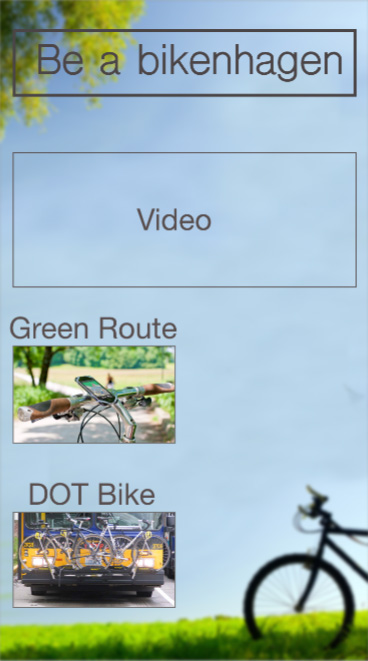Just a short prototype for mobile view of website about given theme. It was a part of a group project with a group "Sense8" formed by Ruxandra Sandru, Neringa Ivanov, Iasmina Filipciuc, Sari Guci and me.
My group used Adobe XD CC to make a design on artboards and then turned it to working prototype. Here I improved my skills in that program aswell, I learned new functionalities and tricks.
02.01.05 Treatment
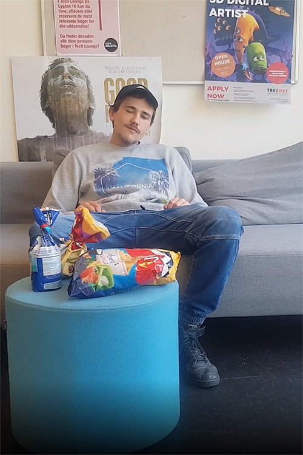Title: Sweet healthy life
Theme: Man changes sweets for bike and gets healthy
The treatment: The young guy sits on the sofa, scrolling on phone and eating sweets. He sees a photo of a group of girls having fun outside with the bikes. All of a sudden he thinks he can leave the sofa and the sweets and go outside biking. He has good and bad thoughts about this which appear like a “good and bad face” on his shoulders and speak to him. The “good face” shows him our website, he starts scrolling and takes his jacket and goes outside.
He goes to rent a bike and he bicycles through the city. He has fun, he feels good, he smiles and he sees nice places. He meets with a group of girls, be becomes friends with them because they are also biking and he has a lot of fun with them. They hang out and so he realises that is more fun outside than staying at home alone. He goes home happy and on his way home he throws the sweets away and he starts exercising at home.
02.01.07 Storyboard
Group's "Sense8" storyboard. We had to prepare this kind of script before shooting various scenes. It was very helpful to have a crib. We could focus on every scene and we didn't forget about any of them. There are informations about: Name, Framing, duration, shoot size, angle, transition and audio.
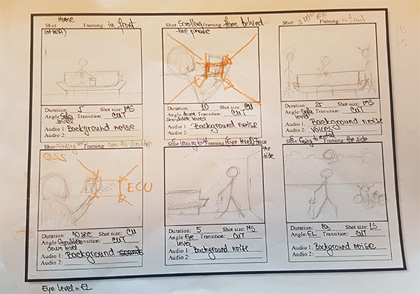 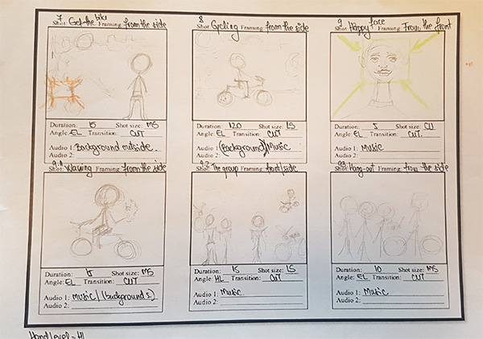 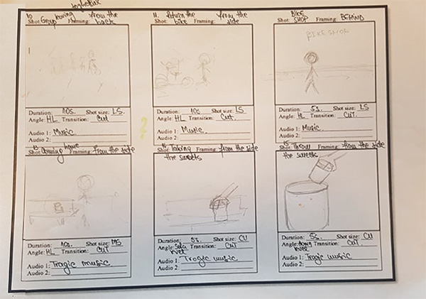 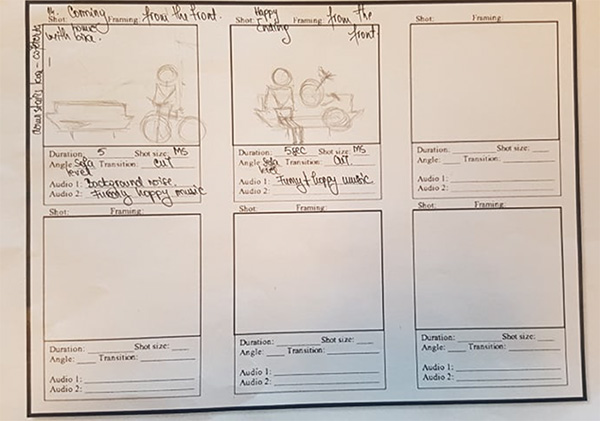02.01.08 Documentation
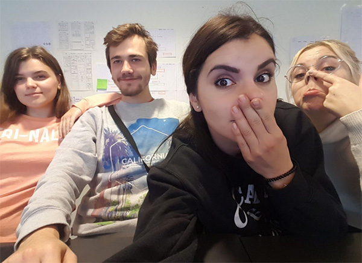Technical documentation includes:
Images asset, video documentation, moodboard, style tile
Description of applied design principles: proximity, contrast, similarity, fits law, hicks law and vertical symmetrie.
02.01.09 Links to micro site
Microsite:
Idea of a site was to help tourist and newcomers to get informations about biking opportunities in Copenhagen.
Video:
Presented above as a "Sweet healthy life".
Green routes in Copenhagen: Copenhagen’s Green Cycle Routes are popular with commuters, recreational cyclists and tourists as well. The total of 58km of Green Cycle Routes in Copenhagen let you enjoy slow rides along designated lanes in leafy surroundings away from motor traffic.
Dot bikes: Sometimes you and your bike will be tired or you’ll have to travel long distances or over water and for that you don’t need to separate, you can just buy an extra ticket.
You can use a train, bus, metro or even a ferry with your bike!
03 - Basic Animation
During that theme I learned about javascript and I practiced it so I know how to use it with HTML and CSS to get more impressive funcionalities. I still need some practise because javascript is not my strong area, but I'm working to be better. I also leraned about animations. I know how to use transitions in CSS to animate elements on websites. I know how to use .SVG elements and manipulate them.
I gained knowledge about animation principles, In future I will try to understand it better, but It's not my favourite area of multimedias. I'm focused on other areas.
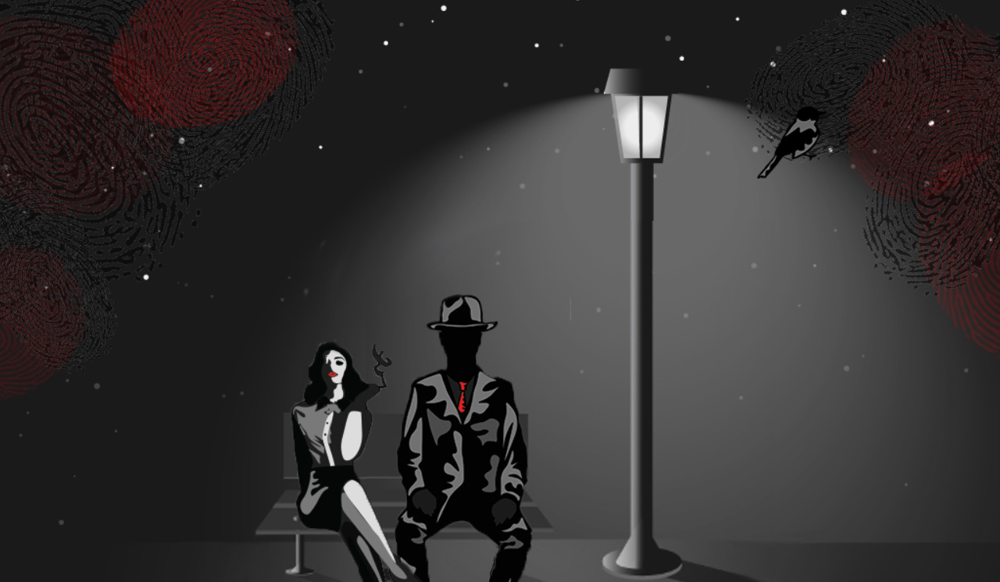 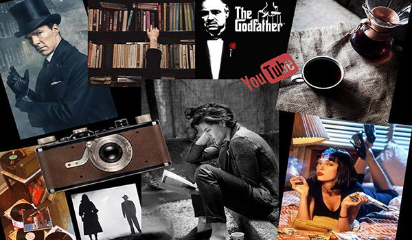 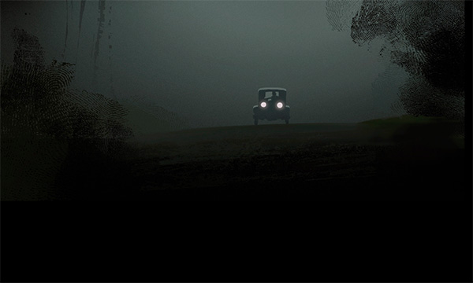
03.01.02 Animation
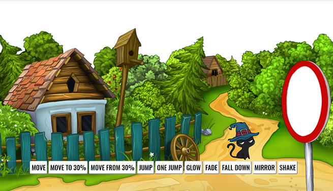Animation that I created using HTML, CSS and javascript. Another project that gave me some lessons about coding. I had a real problem to make it work properly, but finally I managed to do make it done.
I improved my front-end coding skills with another web project. I know how to work with keyframes and how to use javascript with animations.
03.04.05 Interactive production
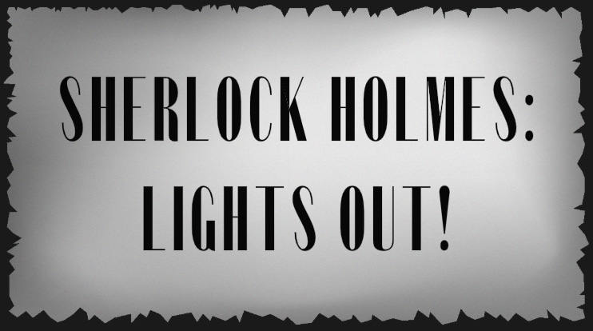Animation created in group with Tabea Grösel, Karlīna Kluce, Andrea Makarová, Dominykas Kutka, Agnė Krasauskaitė, Rūta Celma and me. Story based on Sherlock Holmes series is dark, noir and creepy. There is a Woman, Man and a murder.
We have used all the knowledge gained this semester to create a story, design graphic elements, and make animation working. HTML, CSS, JS, and Adobe CC was a helpful set.
03.04.06 Video: Screen cast documentation
Video documentation of project with interactive animated production "Lights out". We have recorded all the documentation and set it in a one video.
Including: Collaboration agreement, moodboard, storyboard, sequence diagram, characters used in production, background, code and a peer review.
04 - Basic UX
The last theme in that semester was full of challenging projects. "Basic UX" taught me among others:
How to understand business and client goals, how to create plan of goals.
How to treat multimedias as products and how to manage to reach business, commercial success.
How to do user interview to get all the important informations to make updates in my projects.
How to record documents to get the best access to wanted data.
I know how to manage user data and analyse it to get relevant values.
I made huge progress in HTML and CSS doing project 4.3.1. I have focused on functionality for mobile devices with a thought "mobile first".
Below you can see some projects
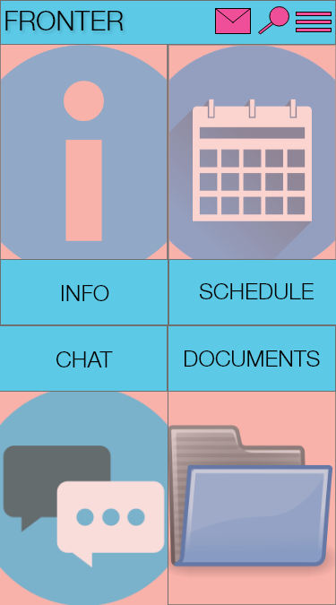 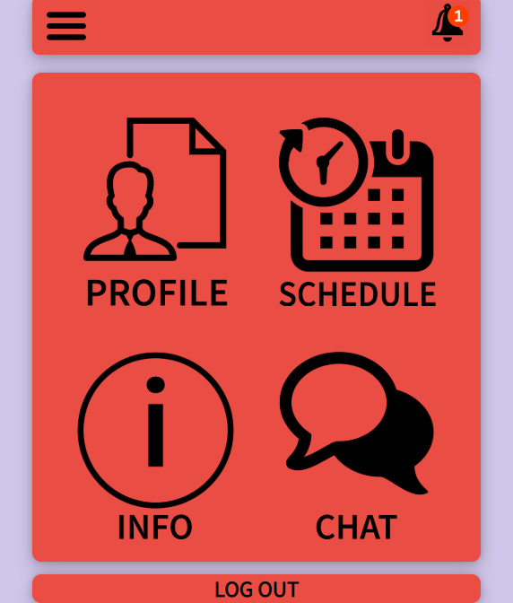 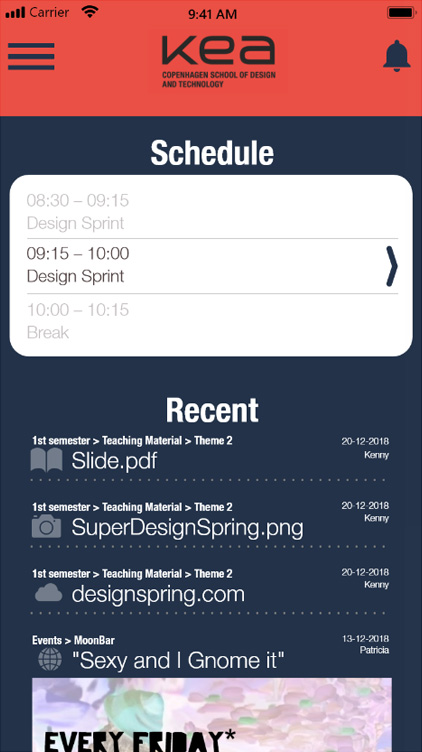
04.03.01. Web prototype
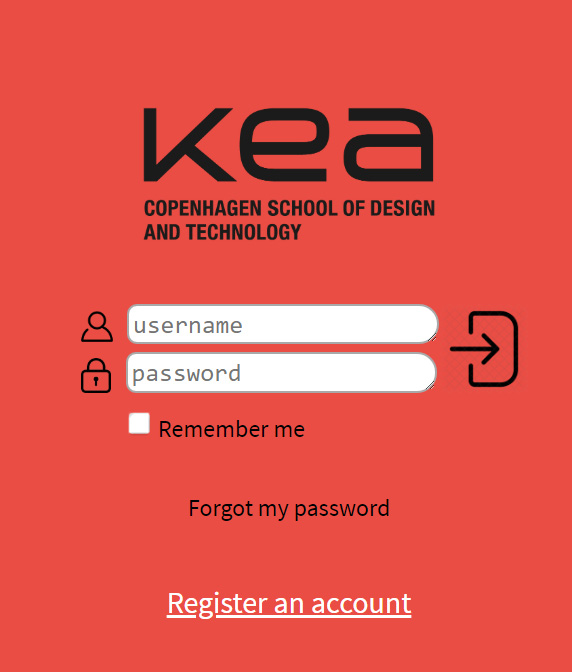Name: FRONTER
Purpose: Get access to your profile, files, chat, schedule and informations. Get connected with school via application.
The most important project of all the web projects that I did in my entire life. I spent a lot of time to make it look nice and to make it functional. I have improved my skills again, because I used here javascript elements to make collapsing menu. I used also HTML and CSS with new selectors, and I was able to create that web application along with my plan and vision.
That web app was based on project 04.02.01 but with a big improvement.
User journey: User have to find "portfolio page". He starts on login page where he has to localise username and password text areas, then he has to press login button. After that, he will be on homepage, then he clicks on profile and next on "portfolio". He can go back to homepage, when he collapse burger menu locatised on top-left side.
After I released first version of app, I made user UI and UX testing. I did 5 intervievs with 5 different users, to get qualitative data. After testing I made changes on my app, and it made huge difference.
04.02.01 Design sprint - XD Prototype
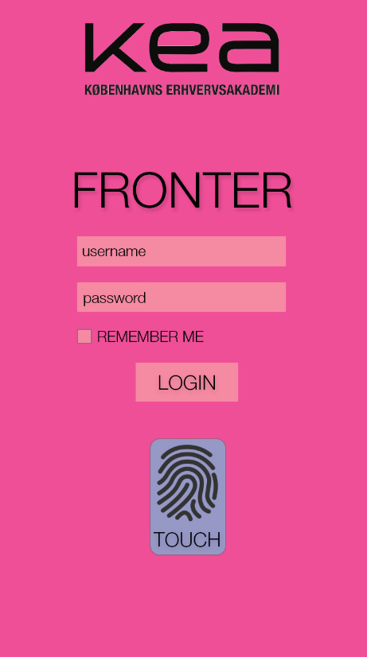Name: FRONTER
Purpose: Get access to your profile, files, chat, schedule and informations. Get connected with school via application.
Real challenge to create app for users, with all the functionalities. I took it step-by-step: sketch, paper prototype, XD prototype. I used Adobe XD CC to create interactive prototype, that helped me to do real app (04.03.01).
User journey let user get trough login page, homepage, informations, schedule, chat, documents, menu and edit profile page. Prototype was not satisfying, so my app based on that prototype has different design.
04.04.01 Design sprint: Native app
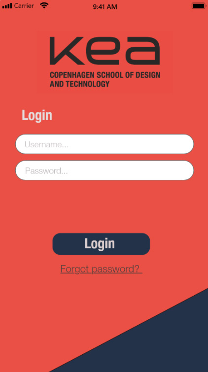Me and group of 5 people: Klajdi Ajdini, Neringa Ivanov, Peter Jensen, Simon Erasmus Johansen, Agne Krasauskaite, Dominykas Kutka, created a XD prototype of application for KEA students.
User journey let you login, check schedule, see recent files, see announcements, open menu, see teaching material, choose semester and theme, hand-in submission and edit submission.
After we were done first first version, we did user testing on 3 users, and we get data that we used for improvements. We fixed errors that we couldn't spot before. Without user interviews, we would have couple of errors on our app prototype.
04.04.02 Theme documentation
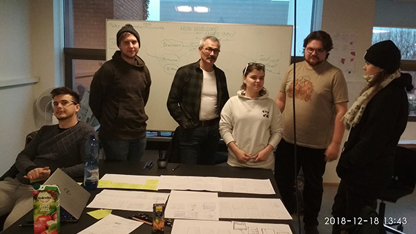The treatment: Whole documentation of projects during that theme, includes:
04.03.01. Web prototype, 04.02.01 Design sprint, 04.04.01 Design sprint: Native app.
User brief and use research: I have prepared Case where I set a client, platform, target, objective and problem. I have described business goals, client's assumptions about the target audience and their actions.
User test design: Type and way of doing user interviews. I also prepared list of tasks for interview and a guide how to do it properly. I prepares questions for users and made tests. After testing I desribed test participants and collected data in a video recordings and come up with conclusion.
After uploading app on web, I did test for page load time and optimalisation of HTML and CSS, and I get grade A, (95/100) points. I did validation aswell, found some errors with missing "alt" attribute for few images. I have fixed them and had no errors anymore.